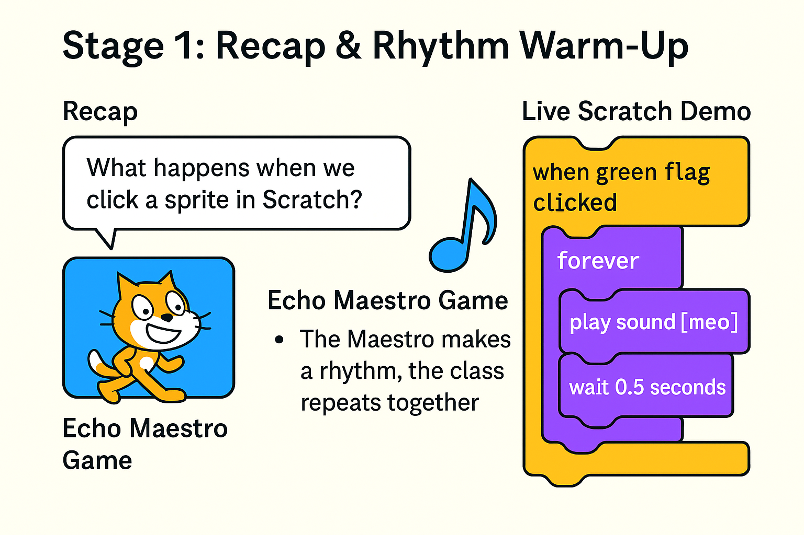
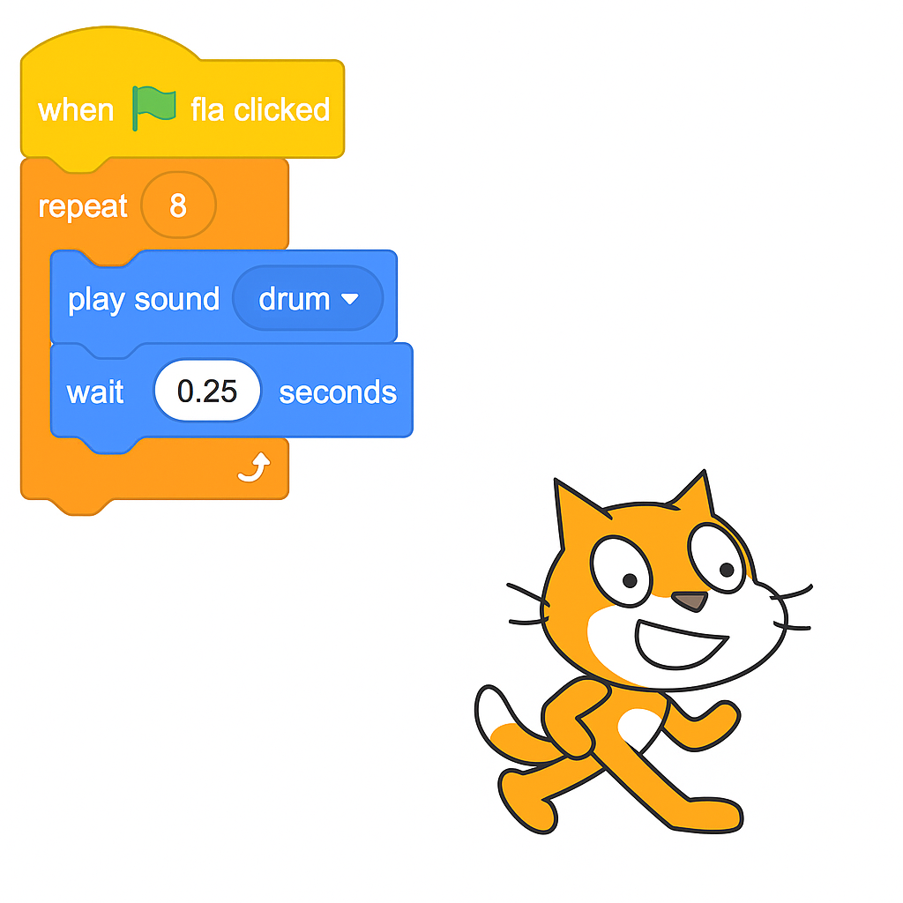
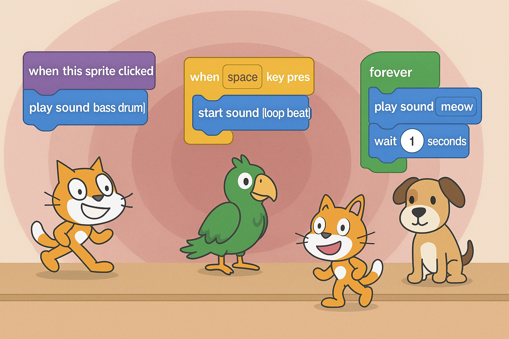

Lesson 4: The Scratch Sound Show
🎵 Lesson 4: The Scratch Sound Show
Theme: “Code is your instrument — rehearse it, remix it, perform it!”
Goal
Students will explore how to create rhythm and performance using Scratch sound blocks and loops. They will learn to control timing, build patterns, and ultimately present their own mini-sound projects.
Learning Model: Conscious Competence
| Stage | Name | Description |
|---|---|---|
| 1️⃣ | Unconscious Incompetence | Spamming sound blocks without rhythm |
| 2️⃣ | Conscious Incompetence | Trying loops, but timing is off |
| 3️⃣ | Conscious Competence | Building sound patterns with loops and delays |
| 4️⃣ | Unconscious Competence | Creating and remixing sound behaviors freely |
🟡 Stage 1: Recap & Rhythm Warm-Up (15 min)
Purpose: Reconnect with prior lesson on events, spark curiosity with a rhythm game, and set up the idea of sound-based coding.
🎯 Learning Objectives
- Recall what events do in Scratch.
- Understand that rhythm needs timing.
- Experience how code can behave like music — or like noise.
🔁 Recap of Event Blocks
- “What happens when we click a sprite in Scratch?”
- “What block do we use to make the sprite jump or talk?”
- “How can we make it react with sound?”
Remind them: Last time, they used when clicked and when [key] pressed to control how sprites react.
🎵 Echo Maestro Spel
Voorbereiding: - Laat de leerlingen in een kring staan of naast hun bureau. - Kies één leerling (of de leerkracht) als de Echo Maestro.
Spelregels: 1. De Maestro bedenkt een kort ritme met klappen, stampen, klikken of geluiden (bijvoorbeeld: Klap – Klap – Pauze – Stamp). 2. De rest van de klas luistert goed en doet het ritme exact na, in hetzelfde tempo. 3. Als het lukt, maakt de Maestro het iets moeilijker (bijvoorbeeld sneller of met een extra beat). 4. Als het fout gaat, herhalen of terug naar een eenvoudiger patroon. 5. Na 2–3 rondes wisselt de Maestro, zodat iedereen een kans krijgt.
Variaties: - Gebruik klasmaterialen als instrumenten (potloden, tafels, etc.). - Voeg bewegingen toe (zwaaien, wijzen) zoals sprites doen in Scratch. - Gebruik woorden of geluiden (zoals Boem – Tik – Boem) om klanken te koppelen aan Scratch-blokken.
Leerkrachtentips: - Gebruik een klap of hand omhoog als stilte-teken of reset. - Wijs een “ritmebewaker” aan met een visuele timer of metronoom.
🧠 Reflectievraag over Code
Vraag: - “Wat gebeurde er als iemand uit de maat ging?” - “Was het moeilijker met ingewikkeldere ritmes?” - “Wat hielp om goed mee te doen?”
Leg daarna uit: > “In Scratch is het net zo. Als je geen wacht-blok gebruikt, loopt je geluid door elkaar. Als je een duidelijke lus maakt met timing, werkt je sprite als een echte performer — net als jullie.”
🖥️ Live Scratch Demo
Open Scratch and add this to the cat:
when green flag clicked
forever
play sound [meow]Ask: “What does this sound like? Is it a song?”
Then fix it:
when green flag clicked
forever
play sound [meow]
wait 0.5 secondsAsk: “What changed? Why does it sound better?”
Finish with: “Now let’s code our own rhythm, like real composers!”
 ````
🟡 Stage 2: Guided Scratch Rehearsal (20 min)
Purpose: Build a structured rhythm loop in Scratch using forever, repeat, and wait blocks.
🎯 Learning Objectives
- Understand how loops and timing create rhythm.
- Practice Scratch syntax to control repetition and delay.
- Begin debugging and adjusting musical output.
🧑🏫 Teacher-Led Coding Demo
Open Scratch and guide the class step-by-step:
Option A: Repeating Drum Beat
when green flag clicked
repeat 8
play sound [drum]
wait 0.25 secondsOption B: Forever Looping Snare
when green flag clicked
forever
play sound [snare drum]
wait 0.4 secondsAsk students: - “What happens if we forget the wait?” - “Can you hear the beat or is it too fast?”
🛠️ Student Activity
Students build their own version using any of the following:
repeatwith a fixed number of beatsforeverfor continuous rhythms- Change sound type, wait time, and number of loops
Encourage students to: - Test different delays (0.2, 0.5, 1) - Combine sounds into short sequences

🟡 Stage 3: Creative Sound Projects (25 min)
Purpose: Students choose and build a sound-based mini-project.
🎯 Learning Objectives
- Apply loops, sounds, and timing in a self-directed creation.
- Combine input (clicks or key presses) with sound playback.
- Experiment and iterate like young musicians and coders.
🧩 Project Options
- Scratch Band: Each sprite plays a different looped instrument.
- Beatbox Machine: Click on different sprites to trigger different sounds.
- Interactive Instrument: Press keys to play sounds with visual effects.
🧠 Add Interactions (Optional)
when this sprite clicked
play sound [bass drum]when [space key] pressed
start sound [loop beat]Encourage layering: - Background beat with a forever loop - Click or key-activated melodies or effects
🛠️ Creativity Prompts
- “What happens if two sounds play together?”
- “Can your sprite ‘dance’ while it plays music?”
- “Can you change costume when a sound plays?”

🟡 Stage 4: The Scratch Sound Show (15 min)
Purpose: Showcase student work in a structured but fun “performance” or “gallery walk.”
🎯 Learning Objectives
- Reflect on creative choices through presentation.
- Celebrate student effort, experimentation, and rhythm.
- Practice giving and receiving positive peer feedback.
🎭 Presentation Options
- Students leave their projects open.
- Walk around and try each other’s Scratch sound machines.
- Use sticky notes or “clap if you like it” feedback.
- Select volunteers to plug in or present on the main screen.
- Introduce the performance: “Here’s my beat machine!”
- Play 30 seconds of each.
💬 Feedback Prompts
- “What sounds did you use?”
- “Did you use
repeatorforever?” - “What would you add next?”
- “What was the trickiest part?”
🟡 Stage 5: Reflection & Wrap-Up (10 min)
Purpose: Solidify learning and set up for next lesson.
🎯 Learning Objectives
- Reflect on creative problem-solving with sound and timing.
- Recognize how coding builds skill through rhythm, logic, and iteration.
- End the session with pride, confidence, and anticipation.
🗣️ Group Reflection
- “What was your favorite sound or beat you made?”
- “What did your code do that surprised you?”
- “What was hard — and how did you solve it?”
- “Did someone else’s project inspire you?”
🔁 Connect to Mastery
“Today you weren’t just clicking blocks — you were coding like musicians. You turned chaos into rhythm, sound into logic, and Scratch into your own instrument.”
“You rehearsed. You adjusted. You made choices. That’s what real creators do — and it’s exactly how game makers, artists, and engineers work.”
“Every sound you made today started with a blank screen. And now, it’s something only you could’ve made.”
🚀 Next Step: Game Designers Assemble
“Next week, we move from shows to games. You’ll build something that reacts, scores, challenges, and wins. All the skills you’ve used today — loops, events, sound — will power your first real game.”
✏️ Optional Homework
Draw or describe your game idea: - What’s the goal? - What makes it fun? - What sounds or reactions does it have?
::: Bring your idea next time — it’s time to code your first game. :::